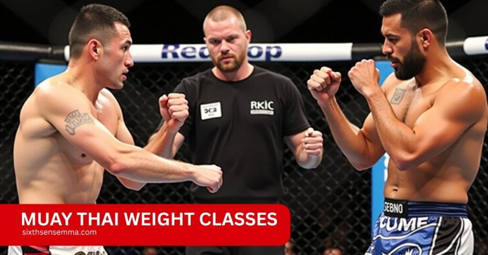
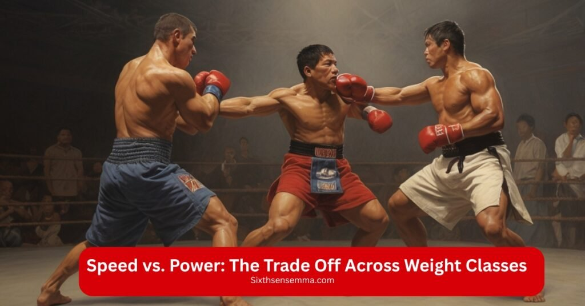
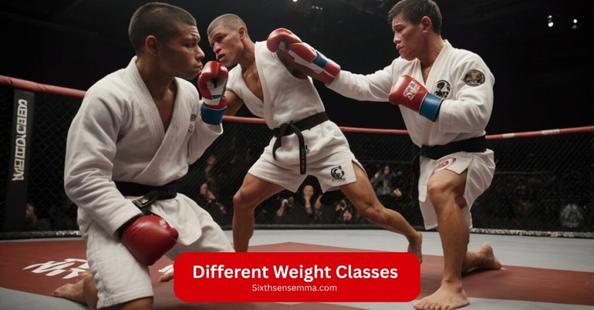

How Muay Thai Weight Classes Impact Your Fight Style

Muay Thai weight class a fighter competes in shapes their entire approach to fighting. These divisions influence everything from training focus to fight tactics. Whether you are preparing for a bout at Rajadamnern Stadium, Lumpinee Stadium, or in a global stage like ONE Championship, knowing how weight class breakdowns affect your style can help refine your strategy. Each weight category demands different physical and technical adjustments, which influence speed, power, endurance, and technique.
Sixth Sense Training Fighters, Serving the Community
At SixthSense, we train real fighters with real purpose. Our goal is to guide every student with discipline, respect, and the heart of Muay Thai Muay Boran. We’re proud to serve our local community through authentic training and honest coaching
Muay Thai Weight Classes
Muay Thai uses a structured weight class system to keep bouts fair and fighters safe. These weight class distinctions vary slightly across Muay Thai organizations like WBC Muay Thai, Rajadamnern Stadium, Lumpinee Stadium, and ONE Championship, but they all share a similar weight class framework based on body mass thresholds.
Each weight class classification affects how fighters train, strike, defend, and recover. Knowing your weight class specifications helps align your strategy with your physical attributes.
Standard Muay Thai Weight Class Chart
| Weight Class | Kilograms (kg) | Pounds (lbs) | Fighter Traits |
|---|---|---|---|
| Mini Flyweight | ~47.6 kg | ~105 lbs | Extremely fast, high cardio, lighter strikes |
| Flyweight | ~50.8 kg | ~112 lbs | Fast combos, evasive |
| Bantamweight | ~53.5 kg | ~118 lbs | Mix of speed and light power |
| Featherweight | ~57.1 kg | ~126 lbs | Technical and agile |
| Lightweight | ~61.2 kg | ~135 lbs | Balanced speed and power |
| Welterweight | ~66.7 kg | ~147 lbs | Heavier strikes, durable |
| Middleweight | ~72.6 kg | ~160 lbs | Strong power, strategic pacing |
| Light Heavyweight | ~79.4 kg | ~175 lbs | KO power, slower pace |
| Cruiserweight | ~86.1 kg | ~190 lbs | Powerful clinching, high impact |
| Heavyweight | ~95.3+ kg | ~210+ lbs | Massive power, slower movement |
Lumpinee vs. Rajadamnern vs. ONE Championship
| Organization | Minimum Weight | Maximum Weight | Notable Rule Differences |
|---|---|---|---|
| Lumpinee Stadium | 105 lbs | 160 lbs | Traditional Muay Thai rules, elbows allowed |
| Rajadamnern | 105 lbs | 160 lbs | Similar to Lumpinee, slightly stricter scoring |
| ONE Championship | 115 lbs | 170 lbs | Uses hydration testing, limited weight cutting |
Speed vs. Power: The Trade Off Across Weight Classes
As fighters progress through the Muay Thai weight divisions, a noticeable shift in fighting style occurs a balance between speed in the lower weight classes and power in the heavier ones.

This transition defines how techniques are executed and how bouts unfold across different categories
Lower Weight Classes: Speed and Precision
From Mini Flyweight to Featherweight, fighters rely heavily on agility, quick reflexes, and high volume striking. Their movements are rapid, and they often deliver fast, sharp combinations to overwhelm their opponents.
characteristics include:
- High strike frequency with less emphasis on knockout power
- Emphasis on footwork, angles, and dodging techniques
- Use of precision strikes and combinations to wear opponents down
- Defensive strategies built on evasion and counterattacks
These fighters often win through technical superiority, consistently outmaneuvering opponents with their speed rather than raw force.
Heavier Weight Classes: Power and Impact
From Middleweight and upward, the focus gradually shifts toward power driven performance. Fighters in these divisions tend to be more deliberate, using fewer but more forceful strikes.
Common traits in higher weight classes include:
- Slower tempo but greater knockout potential
- Increased use of the clinch, elbows, and knees to dominate physically
- Techniques designed to end fights with single, decisive blows
- Stronger physical conditioning to withstand and deliver heavy impacts
Weight Class Comparison Table
| Division | Speed Emphasis | Power Emphasis | Typical Style |
|---|---|---|---|
| Mini Flyweight (≤105 lbs) | Very High | Low | Fast paced, evasive, technical |
| Featherweight (126 lbs) | High | Moderate | Aggressive combos, mobile defense |
| Middleweight (160 lbs) | Moderate | High | Balanced approach, strong clinching |
| Super Heavyweight (210+ lbs) | Low | Very High | Knockout focused, close range brawling |
Technical Proficiency in Lighter Weight Classes
In lighter Muay Thai divisions, the outcome of a fight is often determined more by skillful execution than sheer strength. Fighters in these weight categories emphasize refined techniques that maximize efficiency and effectiveness.
Read more: Sambo Martial Art with a Complete Guide to Its Powerful Styles
Precise Timing and Accuracy:
Success hinges on landing strikes at the perfect moment. Fighters hone their ability to anticipate opponents’ moves, allowing them to deliver sharp, pinpoint attacks that disrupt rhythm without wasting energy.
Read more: Muay Thai vs Kickboxing for Self-Defense, What Works Better
Fluid Footwork and Strategic Angling:
Movement is a key component, with fighters mastering quick, light steps that allow them to control distance and create favorable positions. This enables constant repositioning to avoid attacks while setting up counters.
Rapid, Controlled Strikes:
Techniques such as the teep (push kick) are used not only to keep opponents at bay but also to destabilize and break their guard. Paired with fast jabs, these strikes create openings and maintain offensive pressure without compromising defense.
Combination Mastery:
Rather than relying on single heavy strikes, lighter fighters string together multiple strikes in swift combinations, overwhelming opponents with volume and precision.
Defensive Agility:
Their training develops quick reflexes and smooth defensive maneuvers like slips, parries, and pivots, allowing them to evade attacks and immediately respond.
This high level of technical proficiency reflects the weight class distinctions that prioritize skill and finesse. Mastery over these subtle aspects often distinguishes top performers in lighter Muay Thai weight classes.
Power and Endurance in Heavier Weight Classes
Heavier Muay Thai weight class classifications require a distinct set of physical and tactical attributes compared to lighter divisions. Fighters in these categories concentrate more on building strength and sustaining endurance to compete effectively.
Intensive Strength Conditioning
Training programs in heavier weight classes prioritize developing raw power through weightlifting, resistance exercises, and muscle conditioning. This strength is essential for delivering impactful strikes that can significantly affect the opponent’s stamina and fight strategy.
Enhanced Cardiovascular Endurance
Despite the slower pace, maintaining high levels of stamina is critical. Fighters need to sustain energy over multiple rounds without significant decline in power or technique, ensuring that their strength remains effective throughout the match.
Clinching and Close Range Combat
A major component of fighting in heavier divisions is the clinch, where fighters use knees, elbows, and upper body strength to exhaust opponents. This strategy not only wears down the adversary physically but also limits their striking options.
Slower, More Devastating Strikes
While speed may decrease in these divisions, each strike carries far more force. Fighters leverage their mass and muscle to deliver powerful blows designed to end fights or weaken opponents substantially.
Read more: Muay Thai Fitness Workout: Burn Fat, Build Strength
The Role of Reach and Height
Height and reach are important physical attributes that often correlate with weight class thresholds, but their influence on fight dynamics varies widely depending on how fighters use them.
Advantages of Taller Fighters
Taller competitors typically have a longer reach, which allows them to maintain distance from opponents more effectively. By using extended jabs and teeps (push kicks), they can control the range of the fight, dictating pace and tempo. This control often forces shorter opponents to take greater risks to close the gap, providing taller fighters a strategic edge in managing the bout.
Strategies for Shorter Fighters
Conversely, fighters with shorter stature often develop techniques focused on closing distance rapidly. They rely heavily on angles, footwork, and head movement to evade strikes and get inside the opponent’s reach. Once inside, shorter fighters utilize powerful hooks, elbows, and knees to exploit their close quarters advantage. This contrasting style showcases how height and reach differences impact tactical approaches within the same weight class parameters.
| Attribute | Taller Fighters | Shorter Fighters |
|---|---|---|
| Reach | Longer reach, controls fight distance | Shorter reach, must close gap quickly |
| Fighting Style | Uses jabs and teeps to maintain range | Uses angles and footwork to get inside |
| Strength Focus | Precision striking from distance | Power strikes in close quarters |
| Defensive Edge | Keeps opponents at bay | Evades to avoid strikes and counters |
Impact on Weight Class Comparison
Reach and height are critical factors in weight class comparisons and fighter weight limits. Even within the same weight division, variations in these measurements can lead to significant differences in fighting style and effectiveness. This explains why some champions at prominent venues like Lumpinee Stadium exploit their reach advantage to outpoint opponents who might otherwise be evenly matched in weight and skill.
Training Adjustments by Weight Class
Fighters in Muay Thai don’t train with a one size fits all approach. Their training routines must reflect the demands of their weight class.
Lighter Weight Classes (Mini Flyweight to Featherweight)
Fighters in the lower weight divisions rely heavily on speed, agility, and nonstop movement. Their training is built to support a high pace and sharpen their technical precision.
- Quick burst cardio workouts like HIIT
- Agility and footwork drills for evasiveness
- Pad work and shadowboxing to sharpen combinations
- Stamina training to keep pace for all rounds
Heavier Weight Classes (Lightweight and Up)
In higher weight divisions, fighters tend to rely more on brute force and controlling the clinch. Power takes precedence over speed.
- Strength and resistance training to maximize striking impact
- Emphasize raw strength drills and explosive power conditioning for maximum impact
- Clinch drills for control and dominant positioning
- Heavy bag sessions to develop knockout force
Universal Training Components
Regardless of weight category, all Muay Thai practitioners benefit from a balanced approach incorporating:
- Flexibility training to improve range of motion and reduce injury risk
- Continuous technique refinement to enhance efficiency and precision
- Mental preparation focusing on discipline, focus, and adaptability during fights
Fighters preparing for events at prominent organizations like ONE Championship carefully adjust their training regimens according to the weight class rules, criteria, and regulations governing their division. This ensures they meet the physical and tactical demands unique to their weight class, enhancing performance and competitive edge.
Read more: Martial Arts Classes: Transform Your Life with Power!
Weight Cutting and Its Implications
Weight cutting is a common practice within Muay Thai’s weight class structure, where fighters aim to qualify for lower weight categories by rapidly losing weight before the official weigh in. While this can provide a competitive advantage, it often leads to reduced performance and diminished stamina during fights due to dehydration and energy depletion.
Moreover, aggressive weight cuts increase the risk of injuries and can cause serious long term health problems such as hormonal imbalances and kidney strain. To navigate these challenges, fighters typically follow carefully planned weight management strategies that respect the weight class limits and prioritize gradual weight loss under professional supervision, helping to maintain strength and endurance without compromising safety or fight readiness.
Psychological Aspects of Competing in Different Weight Classes
Mental approach varies with each weight class classification in Muay Thai, adapting to the demands of speed, power, and endurance required.

- Lighter weight fighters develop patience and focus on precise timing to outmaneuver opponents.
- Heavier fighters prioritize maintaining composure and managing energy to deliver strong, effective strikes.
- Mental resilience is vital across all divisions, helping fighters handle stress, recover quickly, and stay focused under pressure.
Why Choose Sixth Sense MMA
At Sixth Sense MMA, we focus on real training with real purpose. We only believe in good, honest muay thai weight classes that is based on consistency, discipline, and respect not shortcuts or gimmicks. Whether you’re preparing for competition or looking to grow through martial arts, our training is designed around your goals, your weight class, and your potential. Every session is about improving physically and mentally with the heart and spirit of true combat training.
What You Get With Sixth Sense MMA
- Authentic muay thai weight classes taught with experience, respect, and precision
- Training based on your weight class — focused on the right balance of speed, power, and endurance
- Supportive, focused environment for all levels, from beginners to serious fighters
- Fight prep for top events like ONE Championship, Lumpinee, and Rajadamnern
- Personal discipline and mental strength that carry beyond training into real life
Start Your Journey With Us
If you’re ready to train with intention and grow in every session, we’re ready to help you begin. Visit our Contact Us page, send us a message, or book your first session today. Your Muay Thai journey starts here with Sixth Sense MMA, where real training meets real results.
Conclusion
The impact of Muay Thai weight classes on fight style is profound. Each division within the weight class hierarchy demands unique attributes in speed, power, technique, and strategy. Tailoring training and tactics according to the weight class criteria and the demands of your division can enhance performance and competitiveness. Understanding these weight class parameters across major Muay Thai organizations like WBC Muay Thai, Rajadamnern Stadium, and ONE Championship equips fighters to perform effectively and safely within their designated weight class classifications.
FAQ’s
Muay Thai includes weight classes from Mini Flyweight (~105 lbs) to Heavyweight (210+ lbs). Each class determines a fighter’s pace, power, and strategic approach, ensuring fair and safe competition.
Lighter classes emphasize speed, precision, and endurance, while heavier classes focus on power, strength, and clinch control. Each class influences training intensity, tactics, and movement style.
Lumpinee and Rajadamnern follow traditional weight limits (105–160 lbs), while ONE Championship uses hydration testing and allows higher weight classes (115–170 lbs), reducing extreme weight cuts.
Lighter fighters rely on fast combinations, rapid footwork, and evasive defense to outscore and outmaneuver opponents instead of using sheer knockout power.
Fighters in higher weight divisions use powerful, deliberate strikes, clinch dominance, and greater endurance. Their strategy centers around force, control, and impactful strikes.
Lighter fighters prioritize timing and tactical patience. Heavier fighters focus on composure, pacing, and managing explosive energy over multiple rounds.
Yes. Fighters often cut weight to qualify for lower classes, but extreme cutting can impair performance, reduce stamina, and increase health risks like dehydration and injury.
At Sixth Sense MMA, training is tailored to your weight class. Lightweights focus on agility and precision, while heavyweights train for power, endurance, and clinch control.
Train with us in Coppell
The first class is free. Shorts, a t-shirt and a water bottle. We lend the rest.
Book a free class